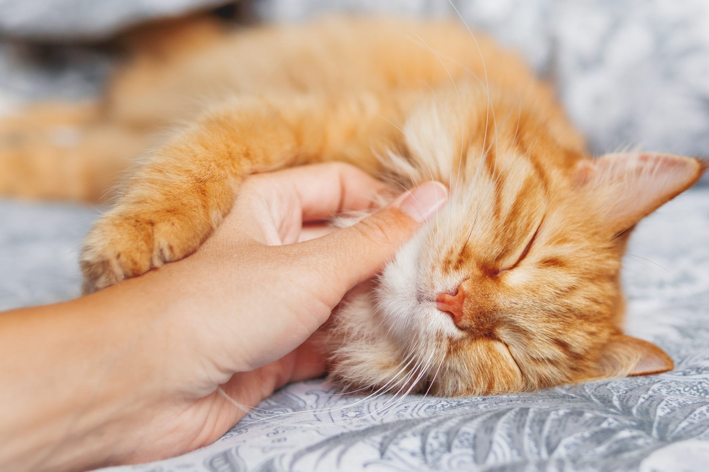

Amelia Simmons

Professional Summary
Emerging marketing professional completing a bachelor's degree in advertising and offering organized nature, planning talents, and communication strenghts to support business and customer demands. Creative and engaging writer knowledgeable about marketing campaign development, social media engagement and brand ambassador relations.
Education
-
Bryant University, Smithfield, RI
-
Bachelor of Arts, Advertising, Expected in 06/2023
-
Minor: Graphic Design
Work Experience
SUMMER INTERN 06/2021 to 09/2021
Dog Podcast Network, Cumberland, RI
-
Assisted with the design and execution and launching of multiple social media campaigns.
-
Created weekly and monthly editorial calendars to promote the company brand on six social media websites, including Facebook and Instagram.
-
Produced high-quality document, spreadsheets and presentations dor internal and customer-facing needs.
BARISTA SHIFT MANAGER 06/2021 to 09/2021
Main Street Cafe And Bakery, Woonsocket, RI
-
Created excellent coffehouse experience through customer service, bevarage preparation and presentation, in-store marketing and thorough cleansliness and sanitation os space.
-
Trained, scheduled, and supervised six barista workers to maintain and uphold store policies and optimize staffing patterns.
-
Restocked and cleaned stations of facilities to maintain cleand and operable standars.
SERVER/BARISTA 08/2016 to 09/2018
Main Street Cafe And Bakery, Woonsocket RI
-
Arranged and prepared 12 tables for customers to offer memorable experiences to guests and foster repeat business.
-
Recommended products based on a solid understanding of individual customer needs and preferences.
-
Maintained and operated espresso machines, blenders, commercial coffee brewers, coffee pots and other equipment.
Skills
-
Marketing and advertising
-
Market research and strategy
-
Social Media
-
Creative and problem-solver
-
Excellent communication
-
Data analysis
Certifications
-
Google's Fundamentals Of Digital Marketing Certication
-
UC Davis Search Engine Optimization Specialization
-
HubSpot's SEO Certification Course